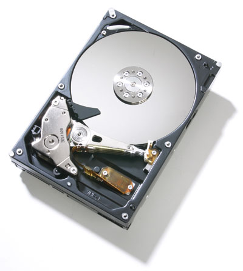

Le périphérique de stockage,permettent de conserver les programmes de traitement et les informations de manière permanente, c'est à dire qu'elle ne sont pas effacés à l'arrêt de l'ordinateur.C'est donc ici que le système d'exploitation est stocké. 